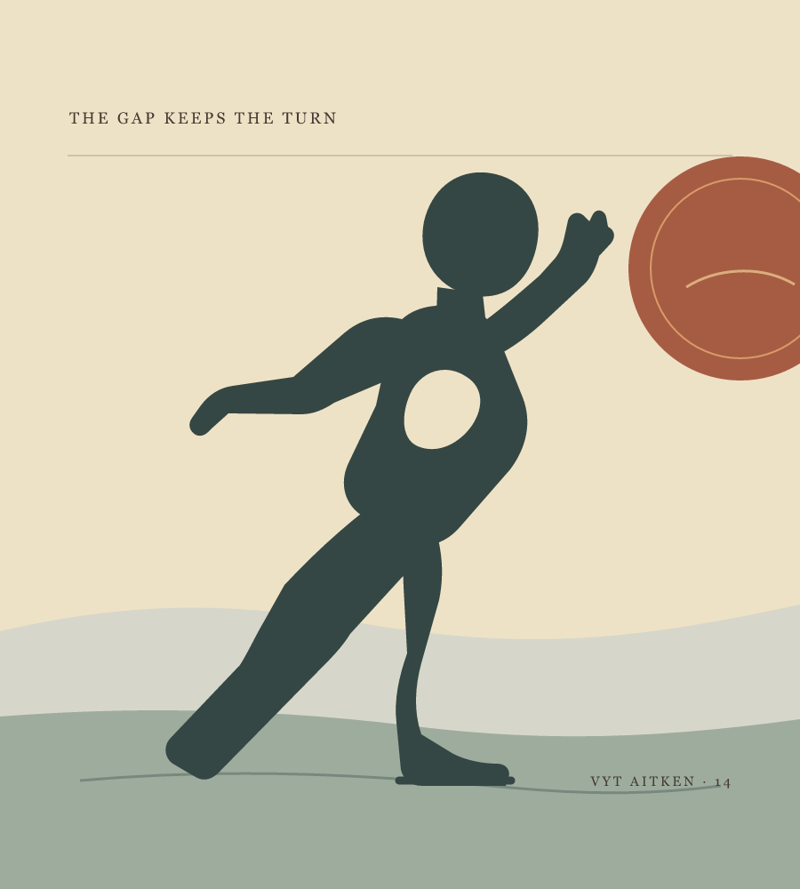
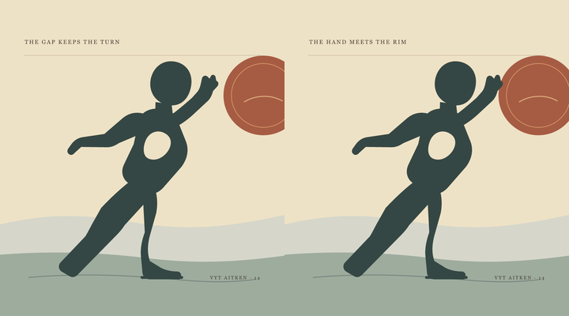
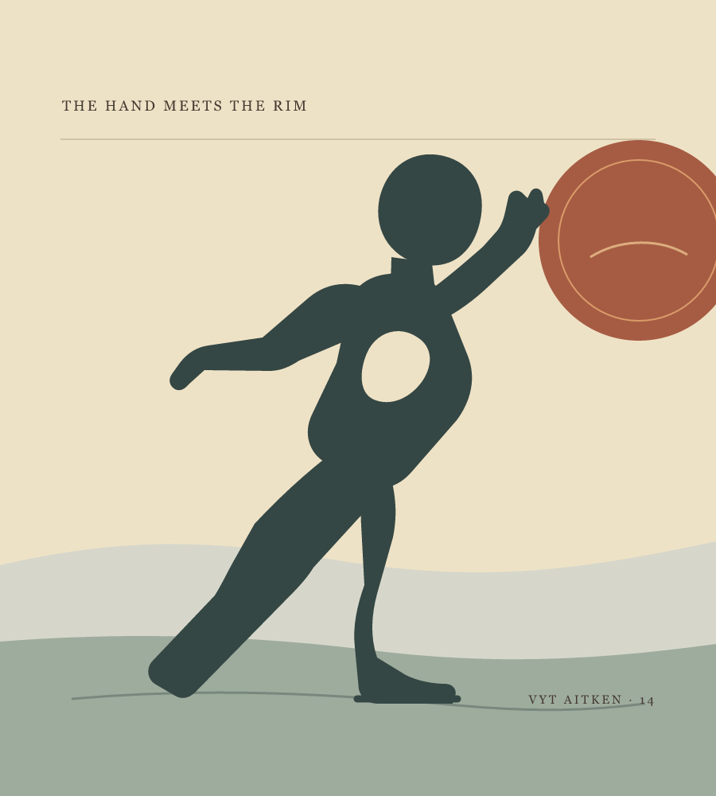

Vyt Aitken · paper-cut figure · 14 October 2026
The Gap Keeps
the Turn

The platter can be a moon, a dish, or a held light. A small opening remains between hand and rim; the body keeps its balance without closing it.
Reach in Time. The hand holds back, meets the rim for a brief beat, and opens the interval again. See the still cut.

At phone size, the contact makes the task legible. The open interval leaves more air and lets the platter remain unnamed. I keep the gap in front.

The Hand Meets the Rim, a contact study beside the open cut.
The figure, platter, and landscape are invented. I wanted the counterweight to come from the body's own reach and stance.
Back to the studio